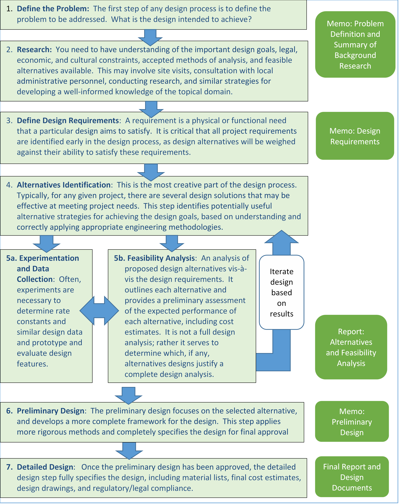

---
redirect_from:
  - "/getting-started/steps-in-the-design-process"
title: |-
  Design Process Steps
pagenum: 3
prev_page:
  url: /Getting-Started/Principles-of-Design.html
next_page:
  url: /Getting-Started/Design-Communication-and-Documentation.html
suffix: .md
search: sup john ecological engineering steps img width authors boltesup gerrad jonessup desiree tullossup selkersup supbiological department oregon state university hr figure below outlines basic typically employed design process boxes right hand drawing indicate where communication documentation called src ecoedesignprocesssteps png style max pxtext align center

comment: "***PROGRAMMATICALLY GENERATED, DO NOT EDIT. SEE ORIGINAL FILES IN /content***"
---

    <main class="jupyter-page">
    <div id="page-info"></div>
    <div class="jb_cell">

<div class="cell border-box-sizing text_cell rendered"><div class="inner_cell">
<div class="text_cell_render border-box-sizing rendered_html">
<p>Authors: John Bolte<sup>1</sup> Gerrad Jones<sup>1</sup>, Desiree Tullos<sup>1</sup>, John Selker<sup>1</sup></p>
<p><sup>1</sup>Biological &amp; Ecological Engineering Department, Oregon State University</p>
<hr/>

<p>The figure below outlines the basic steps typically employed in an ecological engineering design process. The boxes on the right hand side of the drawing indicate steps where communication and documentation are called for.</p>
<p></img></p>

</div>
</div>
</div>
</div>

 


    </main>
    